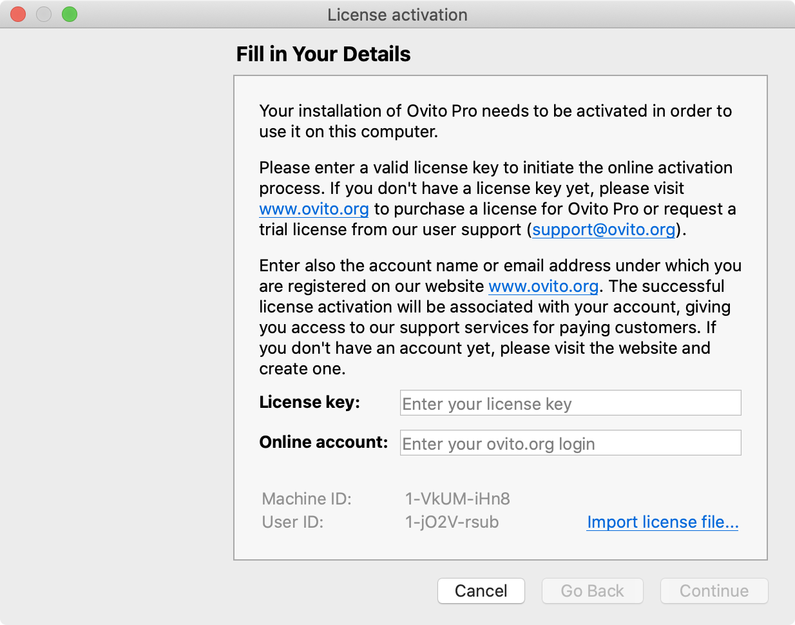
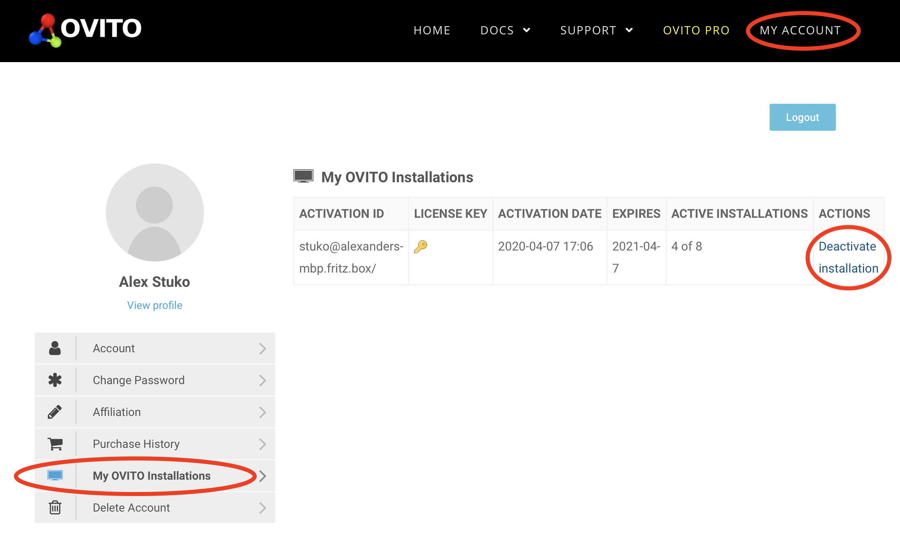

OVITO Pro
There exist two variants of our desktop application software: OVITO Basic and OVITO Pro. The two versions differ in terms of available program features and licensing conditions. This user manual covers both editions, and the program features exclusively available in the Pro edition have been marked with the following tag found throughout the manual: pro
A (nearly complete) list of the program features available only in OVITO Pro and not in OVITO Basic:
{kind=link}
Multiple pipelines in the same visualization scene (comparative analysis)
Instant Python code generation to greatly simplify script development for the OVITO Python package
User-defined modifier functions including GUI controls for user-defined parameters
Option to develop file parsers for custom file formats in Python
LAMMPS integration via LAMMPS script pipeline source
Python script pipeline source to generate new particle structures via scripts
OpenSSH client integration for remote file access (support for smartcards and 2FA authentication methods)
High-quality rendering engines:
Additional modifier functions:
Use of Miller indices in the Slice modifier
Please visit www.ovito.org for further details on OVITO Pro, our support services, and pricing. By licensing OVITO Pro you support the development and maintenance of both editions our desktop software and the OVITO Python module.
License management pro
OVITO Pro must be activated after installation in order to use it on a new computer. During this one-time activation step, the validity of the license key and your entitlement to use the software will be verified by our cloud-based licensing server.
Activating OVITO Pro
{kind=link}
The first time you start up OVITO Pro after installation, you will see the License Activation Dialog. Please note the following:
You must complete the activation procedure to unlock and use the software. If you cancel the activation process, OVITO Pro will quit, and the dialog will reappear the next time you start the software.
An active internet connection is required as OVITO Pro will contact the central license server to check the validity of your license key and register the software installation.
Please enter the OVITO Pro license key you have received from us or from the person that purchased a group license for you. If you are the license owner, you can retrieve the license key at https://www.ovito.org/account/purchases/.
Next, enter your OVITO account name or email address under which you are registered on our website www.ovito.org. Note that if you are a team member using an OVITO Pro group license, you should enter your personal OVITO account here, not the account name of the license owner.
Click Continue to perform the activation. OVITO Pro will contact the licensing server to validate the entered license key and register your software installation. If either the entered license key or account name is invalid, OVITO Pro will display an error message and let you correct your input. If the activation was successful, you can start using the program.
Online license validation
From time to time, OVITO Pro needs to verify your license status by contacting the central license server. The validation occurs sporadically (typically once a week) during program startup and requires a working internet connection – but no user interaction.
Without internet connectivity, you can continue using OVITO Pro offline – but only for a limited period of time. After a grace period of 7 days without successful validation attempts, OVITO Pro will block further use of the software until the next time the license status can be successfully validated again by connecting to the central OVITO server.
Deactivating an installation
{kind=link}
Your OVITO Pro license allows you to install the software only on a limited number of computers simultaneously. This limit is enforced by the OVITO license server, which keeps track of all program installations. Once the maximum allowed number of installations is exhausted, the license server will reject attempts to activate OVITO Pro on further machines.
Thus, in order to install OVITO Pro on a different machine, for instance, after a hardware replacement, employee turnover, or new installation of the operating system, you must first deactivate one of the existing OVITO Pro installations which are no longer needed. This is done online by visiting the URL https://www.ovito.org/account/myinstallations/ and logging in with your personal OVITO account. The page lists all active OVITO Pro installations currently associated with your account. Click Deactivate installation to remove an installation from our records, which will also permanently disable the software on that machine after a synchronization period (up to 24 hours).
This deactivation step decrements the usage counter of the license, and you will subsequently be able to activate OVITO Pro on a new workstation.
Managing a group license
A group license key can be used by multiple team members. Each team member should create their own OVITO account by going to https://www.ovito.org/register/.
The person who purchased the group license is the designated administrator and owner of the license key. The owner can retrieve the key on the OVITO website by reviewing the history of purchases and signing in with their account name. The owner may share the license key with all team members who use it to install OVITO Pro. However, it is the owner’s legal responsibility to prevent unauthorized use and ensure that the secret license key never leaves the group.
The team members should independently activate their OVITO Pro installation(s) by entering the license key and their own personal OVITO account name. Only then will each team member be able to independently manage their own OVITO Pro installation(s) (but not those of other members) on the OVITO website. In case a team member needs to move their installation to a different computer, they can sign in with their personal account and deactivate the old installation at https://www.ovito.org/account/myinstallations/. No action by the license administrator is needed.
The OVITO license server keeps track of all installations performed using the group license key and makes sure that the aggregate number of installations of all team members does not exceed the limit permitted by the license. The group license administrator can access the list of active installations (including the names of the corresponding team members) by going to https://www.ovito.org/account/purchases/. The license administrator has the power to deactivate any of the installations, for example, when a team member leaves the organization and is no longer eligible for using OVITO Pro under the group license.
As a group license owner, if you notice that an unauthorized person continues to use the license key to activate new OVITO Pro installations without your permission, a former team member for example, please contact customer support. The old license key can be replaced with a new secret key.